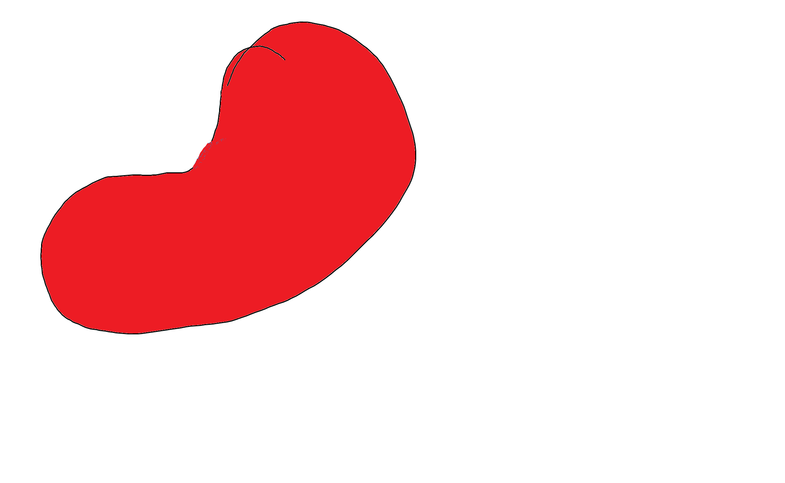

Create a maze and submit it to see if it can be solved
The maze begins in the top left and the end point is the bottom right button
You can only move in the 4 cardinal directions, not diagonally
Add rows and columns to expand the maze
Click on the tiles in order to turn them into impassable walls
The maze is navigated on the tiles, with each square being a movable space or a wall
You cannot change the top left button because it is the starting point
Empty tile will be represented by the word bean
Walls will be represented by a bean image
All images were made by me using ms paint in like 2 seconds
Bean display on the right ->>>
Maze size is capped at 15 because I feel like it if you don't like it then go make your own website >:(
*You can't remove rows or columns. This is a FEATURE and not a DESIGN FLAW and NOT because im lazy. It forces you as the user to be MINDFUL of the decisions you make, especially when you can't take them back. I think this says a lot about society
You can also randomly generate a maze of random size by default, or control the width or height using the input boxes next to it. Putting in an invalid value (like -1) will generate a random size
movable space
wall